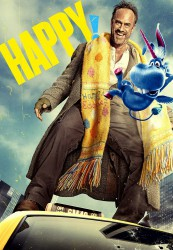

")
 
 IMDB-Wertung: 8.3 / 10
IMDB-Wertung: 8.3 / 10  Metascore:
Metascore: 
Nick Sax war einst ein gefeierter Ermittler der Major Metropolitan Police Force. Doch nun hat Nick alles verloren, lebt von Alkohol, Drogen und Sarkasmus. All das finanziert er durch Aufträge als Profikiller, die er vor allem durch die Mafia erhält. Kurz nachdem einer seiner Mordanschläge schiefläuft, wird sein Leben nachhaltig verändert – und zwar ausgerechnet durch ein kleines, durch und durch positiv eingestelltes und seiner Imagination entspringendes blaues Einhorn mit Flügeln: Happy!Happy stellt sich als imaginärer Freund von Sax’ Tochter Hailey vor und berichtet. dass diese entführt wurde und nun die Hilfe des Vaters braucht. Sax zweifelt an seinem Verstand, denn er hat zwar eine gescheiterte Ehe hinter sich, von einer Tochter weiß er aber nichts …
Jahr: 2017
Dauer: 44 Minuten
FSK: 16
Land: USA Studio: DiziMaxTonspuren: DD5.1 - ,
Untertitel: Deutsch, Englisch,
Auflösung: 720p (1280x720) Größe: 1146 MB
Genre: Thriller, Komödie, Fantasy, Krimi, Mystery, TV-Serie
Regisseur: Brian Taylor, Wayne Yip, David Petrarca
Drehbuch: Grant Morrison
Soundtrack:
Darsteller:
 Christopher Meloni als
Christopher Meloni als  Ritchie Coster als
Ritchie Coster als  Patton Oswalt als
Patton Oswalt als  Alexander Jameson als
Alexander Jameson als  Patrick Fischler als
Patrick Fischler als  Joseph D. Reitman als
Joseph D. Reitman als  Antonia Rey als
Antonia Rey als  Debi Mazar als
Debi Mazar als  Michael Maize als
Michael Maize als  Joe Perrino als
Joe Perrino als  Billy West als
Billy West als  Ashlie Atkinson als
Ashlie Atkinson als  Jennifer Kim als
Jennifer Kim als Datei: X:\HD-Serien\Happy\Happy S01\Happy S01E01.mkv seit 04.05.2018
Festplatte: HD Serien(A-H)
 Es gibt insgesamt 182 Filme in der Gruppe 'HD-Serien'
Es gibt insgesamt 182 Filme in der Gruppe 'HD-Serien'